| 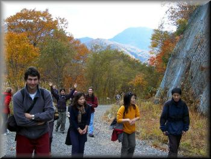 | 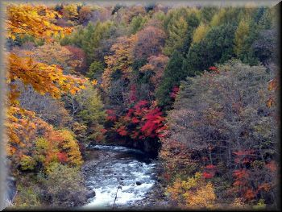 | 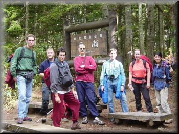 |
| Cheerful start | with autumn colors | |
| 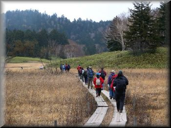 | 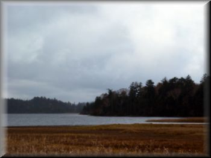 | 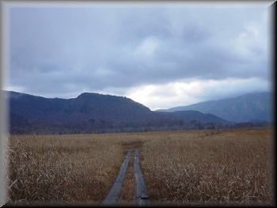 |
| around the lake |
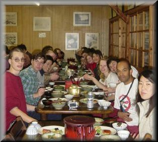 |
cloudy skies |
| 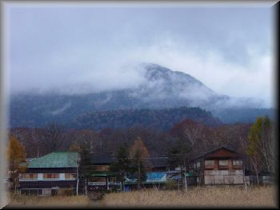 | 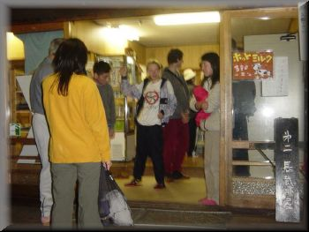 | |
| Hiuchi-ga-dake in clouds behind the lodge | the dinner | and then the earthquake!!! |
| 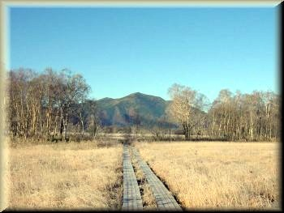 | 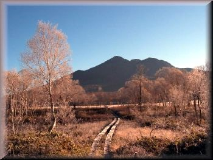 | 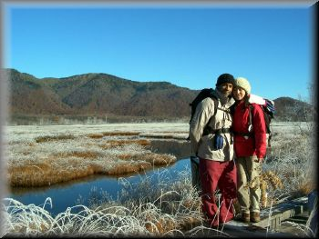 |
| bright morning - clear view of Shibutsu-san | Hiuchi-ga-dake behind | warmth in the marsh covered in frost |
| 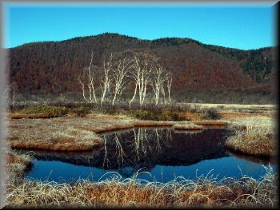 | 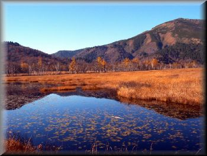 | 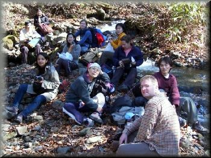 |
| picturesque | blue in gold | the nature admirers take a break besides a river |
| 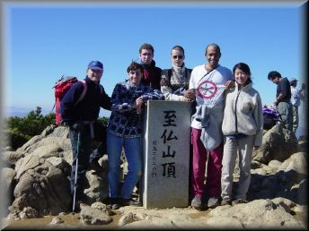 | 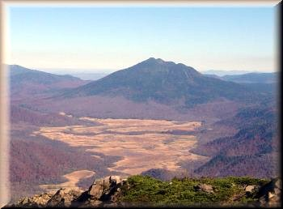 | 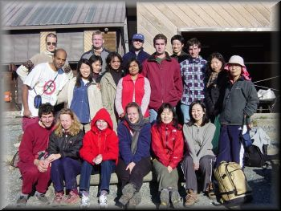 |
| while the brisk walkers climb Shibutsu-san | a view of the marsh and Hiuchi-ga-dake from Shibutsu-san | the whole group... |
Tremors, shocks and picturesque marsh - Report by Archana
|
Hi everyone,
This time tmwc adds another record for its history - a night of earthquakes
in a shaking mountain hut! Anyway that would come later.
First lets congratulate Ryoko and Ajay for such a good organization not
only of the walk but also of the photo-contest. It was fun.
If you are interested in only looking at the pictures, the link is given at
the bottom.
First day:
Oct 22nd 2004
The day began early, waking up at 3 am and leaving Tsukuba around 4:30 am
driving through the traffic jam near Nikko. By the time all the cars reached
the car park, there was no time left for the difficult option. The weather
was good and the scenery was beautiful. We could view the autumn colours
in abundance all around the trail. As we approached the hut, it started
drizzling, but it didn't hinder our views or walk and everyone reached the
hut much ahead of the map time.
We had to kill about an hour before we could take our baths or dinner, which
was not difficult as we strolled around the marshes outside, and then
huddled near the warm heater for chatting. After the dinner it was women's
turn to get in Ohuro. I had just begun to relax in hot ohuro when the
earthquake struck. I didn't feel much vibrations myself because I was in
water. Though I wondered why everything around me was shaking so violently
, I shrugged off my thought attributing it to the wooden hut. The other
Japanese lady who was with me panicked a bit but I persuaded her to stay in
while the milder tremors continued. When I came out,I was interrogated by
Sweta and Yu on whether I had any clue to how dangerous was the earthquake.
When they said it was 6.8, I realized how stupid I was to indulge in ohuro
amidst the tremors. Many hikers stood outside apprehending more tremors. I
joined them too. Then we felt a big jolt and an equally big noise. Some
people who were inside rushed out in panic. For a moment, the hut seemed
as if it might collapse. We stayed out in the freezing cold for about 30
minutes, and some people stayed on for about a couple of hours. Most
Japanese guests and staff were indifferent and cool and didn't step out at
all. They were in fact laughing at us when we rushed out. We had no access
to TV but through the news on radio and information on telephone we knew
that we were pretty close to the epicenter. We then discussed whether to go
back to the car park and sleep inside the cars or to stay outside and have a
camp fire. Eventually the tremors subsided and we decided to get in our
rooms and sleep. We kept a small bag with warm cloths and the stuff under
our pillow in case we had to make an emergency exit. I was sleeping right in
front of the door. Tremors continued through the night. I was too sleepy to
be intimidated by the tremors any more. I was more intimidated by my room
mates ,Nicolas,Sveta, Ajay and Ryoko stamping over me to rush out on a hint
of vibration, even if it was .due to footsteps outside. Soon after everyone
fell asleep, Keitai alarms started buzzing in chorus at 6:00 am. Darn! some
people are so punctual!!
Day 2:
Oct 23rd 2004
The morning after the shaky night was bright and sunny. Ajay and Ryoko
successfully managed to get everyone out before 7:00, which was a good idea.
Oze looks more beautiful in the morning light and it was a picture perfect
walk and weather. There were two groups - as usual. The faster group went
to see the river(I don't remember which river) and then climbed up shibutsu
San. The slow group had plenty of time to enjoy the views and take pictures.
Some of the hikers climbed up Shibutsu San half way through to see the view
from there. After we got-together, Ajay and Ryoko had a tough time noting
down the options for hikers - which were - onsen,dinner (at El Torito), no
onsen but dinner, no onsen no dinner, both onsen and dinner. Whew!! They
looked so perplexed as people switched from their options stated earlier,
including me :).
I ditched onsen and tagged along in Luc's car in a hope to reach Tsukuba
early. However, we were stuck in a traffic jam and the cars who made it to
the onsen also reached around the same time as we did! When I called Alok to
check out if there was any dinner left at home for me, he said he could give
me sandwiches. Oh no! We had enough of sandwiches and onigiris these two
days. So we joined the gang at El Torito and the food at El Torito never
tasted so oishi before!
A big thanks to all the drivers! And everyone for their interesting
conversations.
Congratulations Luc ! For winning the photo contest and other achievements
too :)
Archana
|